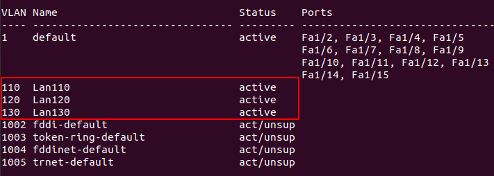
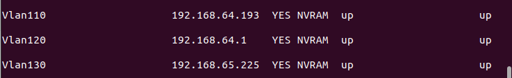
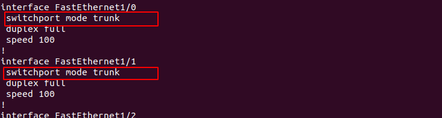
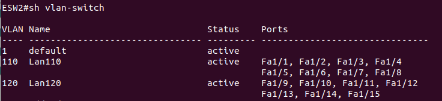
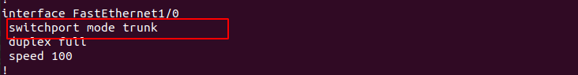
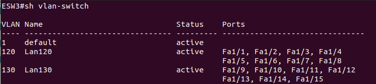
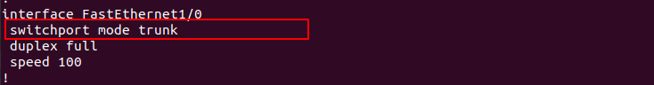

Cada departamento de cada área está en un subred diferente. Para una mayor escalabilidad se optó por usar vlan para cada subred. Para ello se usó un switch de capa 3 (por cada área) encargado del enrutamiento inter-vlan y switches de capa 2 para la asignación de los vlans.
Para este caso se va ha mostrar las configuraciones realizadas en el área de atenciones empresariales de la sede atención al cliente.
Vlans por área
Interfaces vlans
Enlaces troncales
ESW2
 ESW3
 